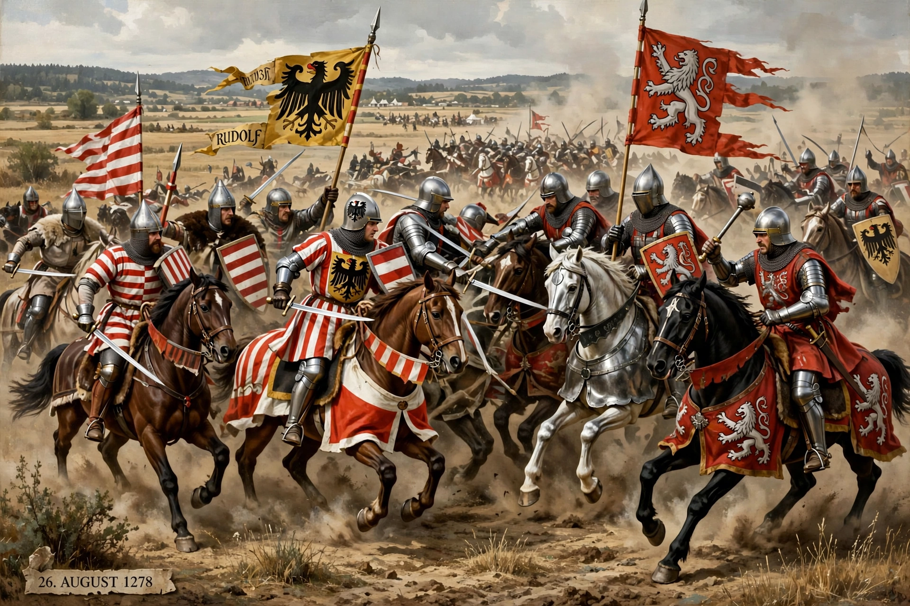

Battle on the Marchfeld

The Battle on the Marchfeld, fought on 26 August 1278 at Dürnkrut and Jedenspeigen on the Marchfeld plain north-east of Vienna, was a decisive engagement between the armies of Rudolf I of Habsburg, king of the Romans, and Ottokar II, king of Bohemia. Ottokar was defeated and killed, and the victory laid the foundation of Habsburg rule in Austria, which lasted until 1918.
| Date | 26 August 1278 |
|---|---|
| Location | Dürnkrut and Jedenspeigen, Lower Austria |
| Result | Decisive Habsburg victory |
| Belligerents | Holy Roman Empire (Habsburg) and Hungarian allies — Kingdom of Bohemia |
| Commanders | Rudolf I; Ladislaus IV of Hungary — Ottokar II † |
Background
Ottokar II had built a vast dominion from Bohemia to the Adriatic during the imperial interregnum. When the electors chose the relatively minor Swabian count Rudolf of Habsburg as king in 1273, Rudolf demanded the return of the imperial lands Ottokar had absorbed — Austria, Styria, Carinthia and Carniola. After an imperial ban and an earlier campaign in 1276, Ottokar submitted but then renounced his homage and marched again in 1278, supported by allies from Brandenburg, Silesia and Poland.
The battle
Both armies were largely heavy cavalry, with Rudolf reinforced by Hungarian and Cuman horse archers under King Ladislaus IV. The fighting was hard and long in the summer heat. A concealed Habsburg reserve, held back on Rudolf's orders, fell on the Bohemian flank at the critical moment and turned the battle. In the rout, Ottokar was killed — by some accounts murdered after surrender by personal enemies — and his body was later displayed in Vienna.
Aftermath
Rudolf enfeoffed his sons Albert and Rudolf with Austria and Styria in 1282, founding the Habsburg dynasty's eastern power base. Bohemia passed to Ottokar's young son Wenceslaus II under a regency. The battle is regarded as one of the formative events in Central European history.